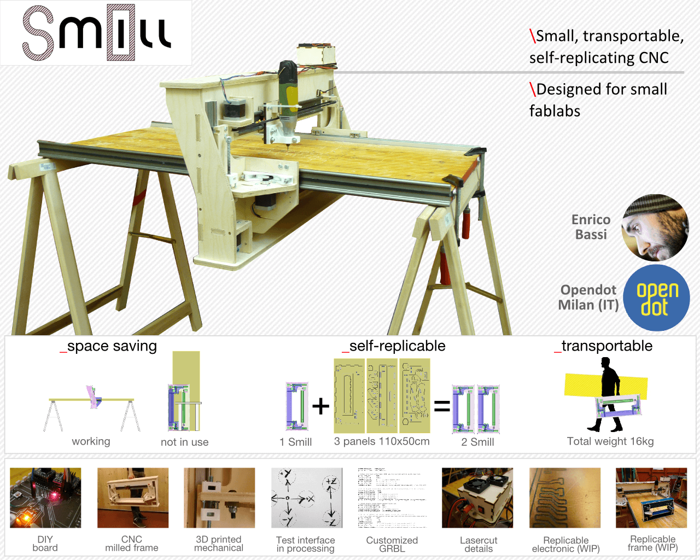
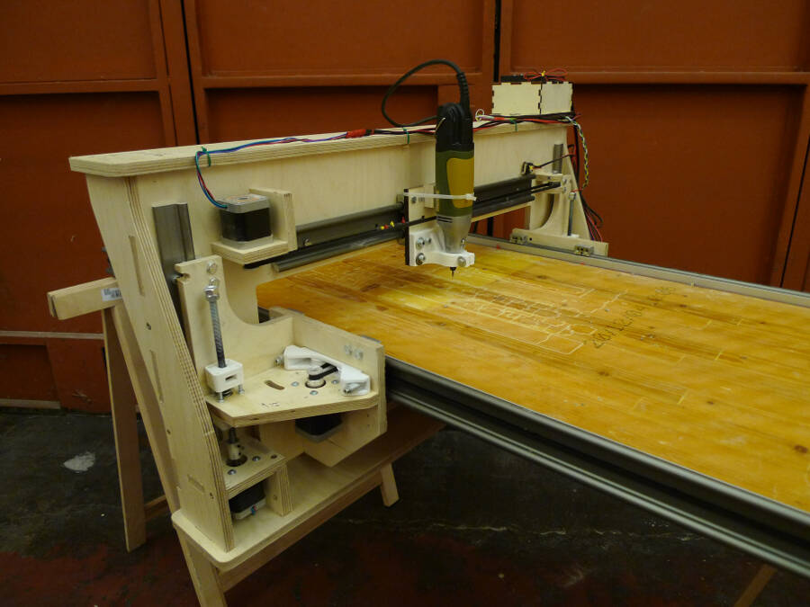

Here the presentation of my final project:

A short video of the machine working is here:
I also did a test to replicate the PCB. Being designed for the laser, it was almost impossible to get a nice result, but it was an interesting test to do anyway
The frame itself is self replicant. Here a video of the first test of milling a Smill. The result is good, even if it was just a 1:3 prototype.
Here some pictures of Smill.
Some views of the mounted machine:

Here dismounted an put together with the plywood panels:
Here the partial result about replicability. First with the frame (here in the 1:3 scaled version)
and a detail of the board. To get to mill properly a PCB, I have to improve a lot the reliability and the precision
here the pictures of the other two tests done on plywood
It's important to me to point out that I haven't ever done anything like this. Even if I worked in fablabs during the last four years I never buint a machine this complex. Beside the big amount of work done by our local instructor, Massimo, I really want to thank both the group of students I worked with and the fablab Opendot. I always had the feeling that even if everybody was always busy doing their job, nobody has been left behind, or left alone.
And that was just great!